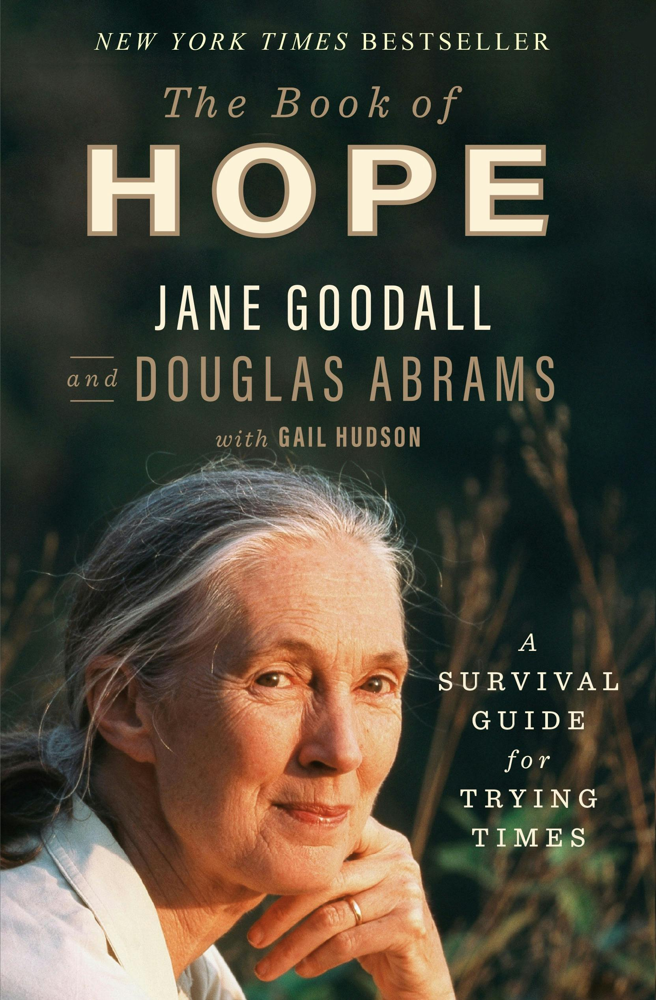

Climate action
Drawdown
A collection of climate solutions spanning energy, food, land use, and other parts of society.
Read the recommendation
Hardcover · ISBN 9781250784087
Publisher cover image
A conversation about hope, nature, and finding reasons to keep taking part.
Affiliate link · As an Amazon Associate I earn from qualifying purchases.
View this edition on Amazon ↗Links to the pictured edition. Confirm the selected format, availability, price, and seller on Amazon. Cover designs can vary between printings.
Through conversations with Douglas Abrams, Jane Goodall reflects on the experiences and ideas behind her hope for the future. The book brings together stories from her life and her concern for the natural world.
Readers looking for a reflective, conversational companion to more technical environmental reading.
Choose a different book if you want an emissions model, a policy handbook, or a technical climate-science introduction.
Consider what helps you stay engaged with a difficult subject without looking away from it.
AI-assisted overview based on published book information, not a firsthand review. Source information ↗
A collection of climate solutions spanning energy, food, land use, and other parts of society.
Read the recommendation